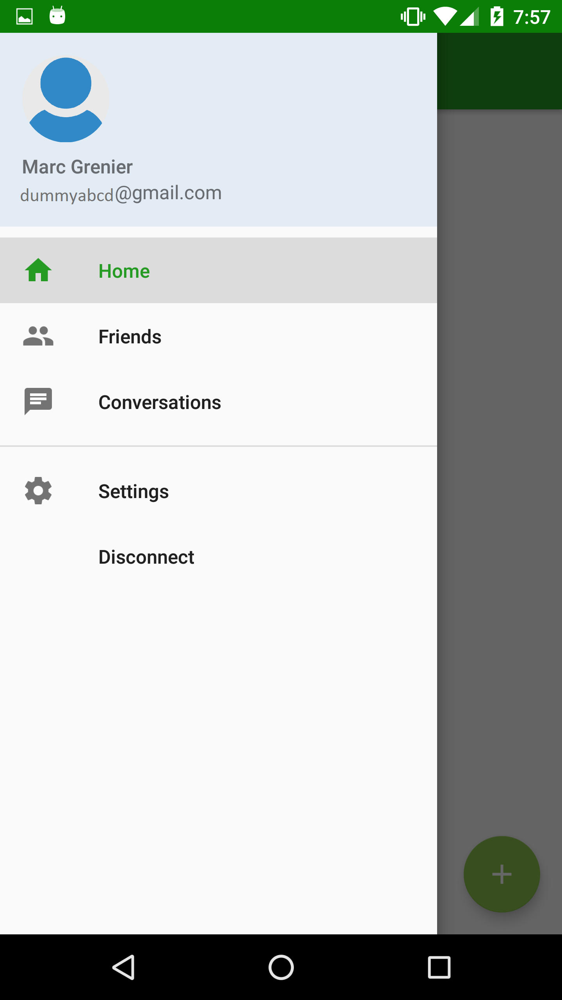
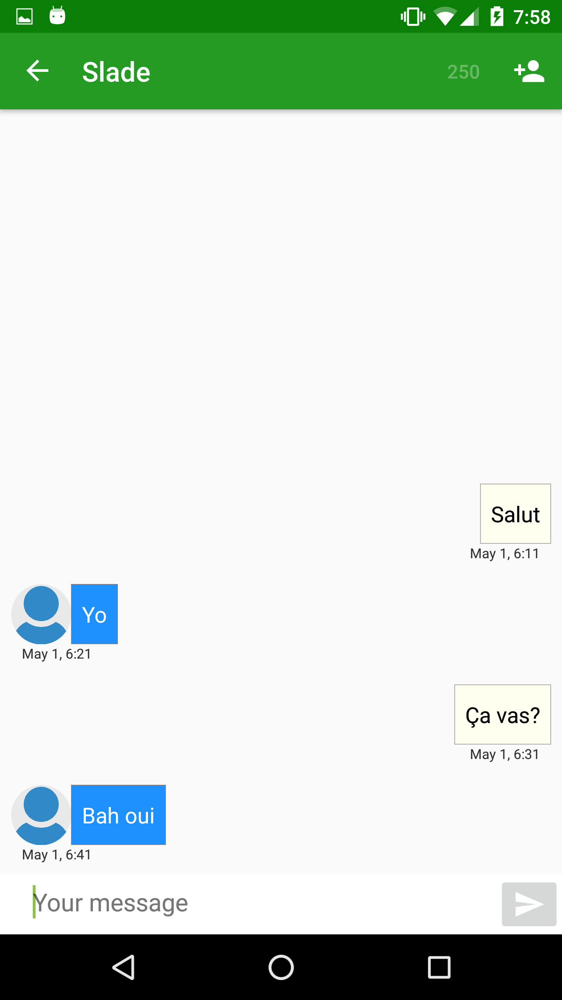

Project overview
Rantalk is a prototype application developped on Android. It was not fully developped, but still has multiple Material Design features implemented like a navigation drawer, a floating action button and list with swipe refresh. The objective of Rantalk was to offer a funny application that would allow user to get in contact with random people around them by simply sending a message.
Images


